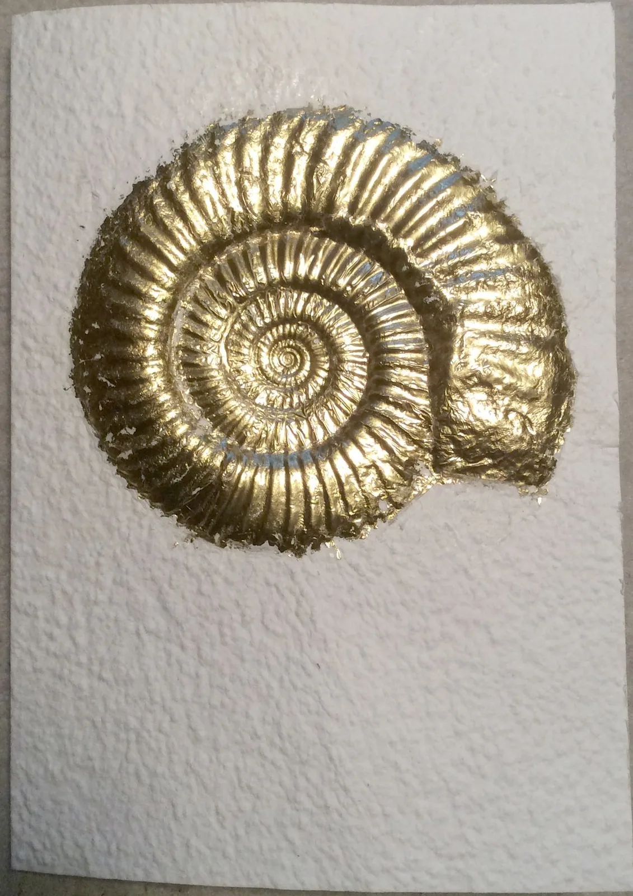
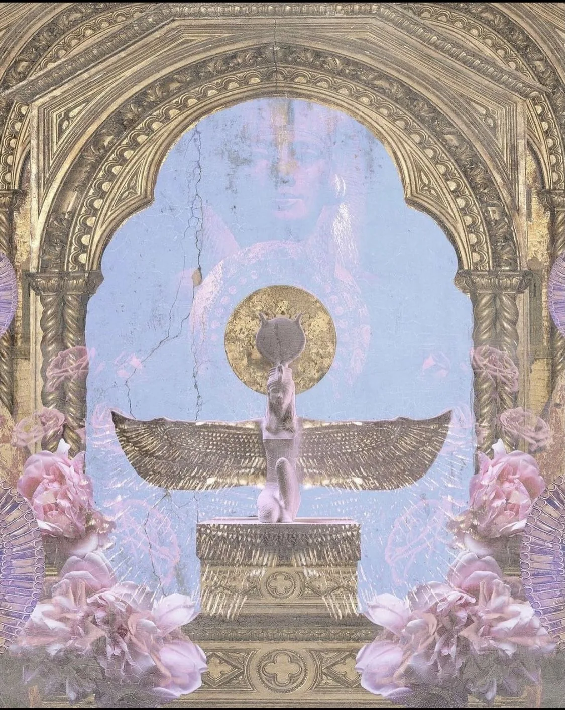
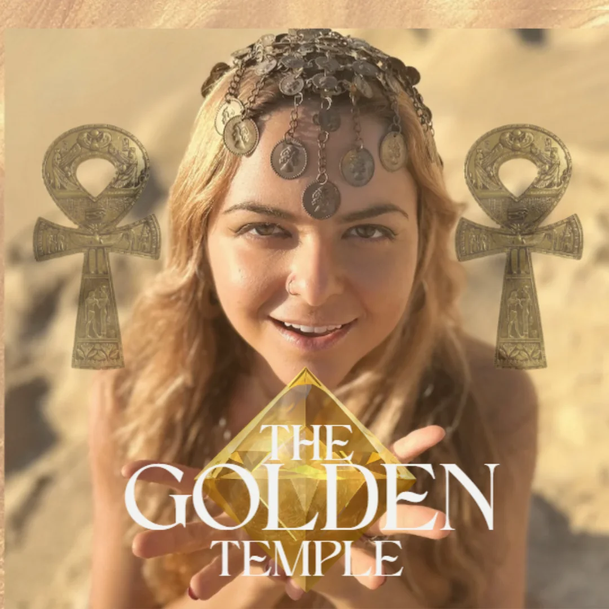
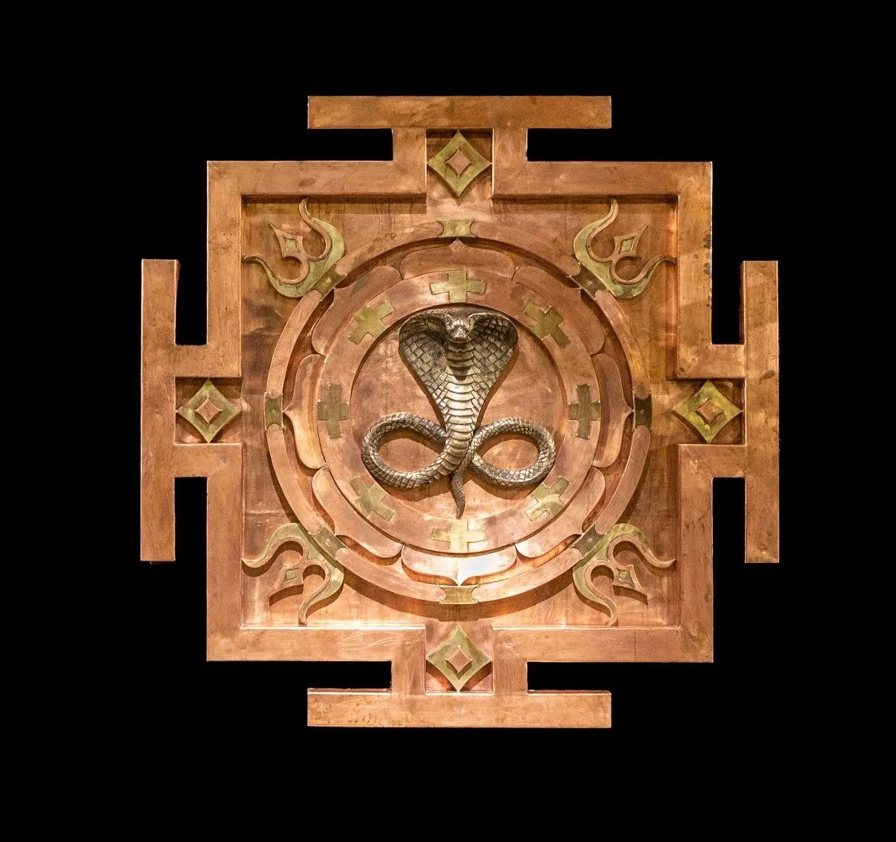

Olhar para o agora
Trazer o momento que você está vivendo: uma escolha, uma relação ou um desejo que pede mais espaço.
UMA SESSÃO INDIVIDUAL COM PRANA KA
O que você deseja,
quando se permite escutar?
Um encontro para olhar para o seu momento, acessar seus desejos e encontrar clareza para suas escolhas.
Sessão paga · Informações e agendamento pelo WhatsApp
Só depois, no banho, vêm as palavras. O limite que você queria colocar. O desejo que engoliu. O “sim” que saiu quando, por dentro, era “não”.
Você construiu seu caminho, assume responsabilidades e tem tanto a oferecer. Mas, na hora de escolher por você, pode acabar procurando fora a permissão que gostaria de sentir por dentro.
Por isso, este encontro começa com uma pausa para escutar o que é seu.
Na sessão individual, Prana conduz uma meditação e uma escuta voltada ao ventre e ao corpo. O convite é perceber seus desejos para além das expectativas, dos medos e da tentativa de racionalizar tudo.

Trazer o momento que você está vivendo: uma escolha, uma relação ou um desejo que pede mais espaço.
Desacelerar a análise e voltar a atenção às sensações e percepções que aparecem na prática guiada.
Dar palavras ao que percebeu e olhar para suas escolhas com mais presença e confiança em si.
Um encontro individual de escuta e autoconhecimento, conduzido por Prana Ka.
ESTE CONVITE É PARA VOCÊ

Talvez seja uma mudança que você adia. A vontade de expressar seus limites com mais firmeza. Ou o chamado de oferecer ao mundo um trabalho que tenha mais a ver com quem você é.
Se você está disposta a dedicar tempo e investir na própria escuta, a Visão Uterina pode ser um primeiro encontro com esse movimento.
Quero conversar sobre a sessãoQUEM CONDUZ

“Poético e selvagem,
mas com extrema clareza,
um discernimento
e um pé no chão.”
É assim que Prana descreve a essência do seu trabalho. Criadora do Método S.E.R., ela reúne escuta, corpo, voz e expressão artística em seu acompanhamento de mulheres.
Na Visão Uterina, essa escuta se volta para você: o seu momento, as suas percepções e aquilo que deseja viver.
Mulheres que percorreram os Portais do Ventre com Prana Ka.
“Navegar pelos 8 Portais do Ventre foi e ainda é caminho para expressar livremente tudo o que sinto por dentro… Uma jornada vivencial que me liberou do medo da rejeição, da falta de confiança e da ausência de reconhecimento… Que refletiu faces até então ocultas da minha verdadeira natureza.”
“Todos os encontros foram uma oportunidade de encontrar com meu feminino sagrado, muitas vezes esquecido e adormecido, onde pude sentir com toda sutileza e delicadeza meu poder, minha força e meu valor, reconectando com minha voz interior e assim podendo expressar minha verdade com mais naturalidade e confiança.”
“Vivenciar os Portais do Ventre foi uma experiência maravilhosa na minha vida. Consegui me expressar com mais clareza, entendendo minha potencialidade feminina, além de aprender MUITAS coisas interessantes de diversas áreas diferentes. Eu AMEI.”
“A cada portal que adentrei, despertei partes adormecidas dentro de mim e senti uma força especial nascendo e transbordando. Hoje, me sinto mais confiante, leve e aberta para o novo. Foi como se eu estivesse desabrochando como uma rosa, revelando potenciais, beleza e cura em cada pétala.”

R$333
Sessão individual e online, conduzida por Prana Ka.
Você separa tempo e dinheiro para muita coisa que sustenta outras pessoas. Aqui, você separa para si. A sessão começa antes de começar — no momento em que você marca esse espaço como seu.
Quero agendar minha sessãoVocê fala direto com a Prana. Ela envia as formas de pagamento e os horários disponíveis.
ANTES DO ENCONTRO
Sim. É um encontro individual com Prana Ka, voltado à escuta dos seus desejos e à percepção do momento que você está vivendo.
A prática é conduzida por Prana. Se você tem dúvidas sobre a experiência ou sobre como participar, pode contar isso a ela na conversa pelo WhatsApp, antes de agendar.
A sessão é de R$ 333. Você fala com a Prana pelo WhatsApp: ela envia as formas de pagamento e os horários disponíveis antes da sua confirmação.
Falar com a Prana pelo WhatsApp ↗A Visão Uterina é uma sessão individual. A mentoria The Golden Temple é uma jornada de acompanhamento. Aqui, o convite é conhecer a sessão e conversar com Prana sobre o seu momento.
O PRIMEIRO PASSO É UMA CONVERSA
Converse com a Prana sobre o seu momento
e saiba como viver a Visão Uterina.
Você será direcionada ao WhatsApp da Prana.